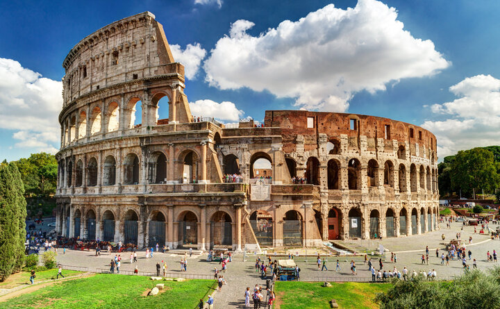

Descubra os Encantos da Europa
Paris, França

A Cidade Luz é famosa pela Torre Eiffel, Museu do Louvre e a charmosa Montmartre. Descubra a arte, a moda e a gastronomia desta cidade cosmopolita.
Roma, Itália
A Cidade Eterna guarda o Coliseu, o Vaticano e as ruínas do Império Romano. Viaje no tempo enquanto desfruta da deliciosa comida italiana.
Barcelona, Espanha

Capital do Modernismo com a arquitetura de Gaudí e praias ensolaradas. Explore a animada cena cultural e gastronômica desta cidade à beira-mar.